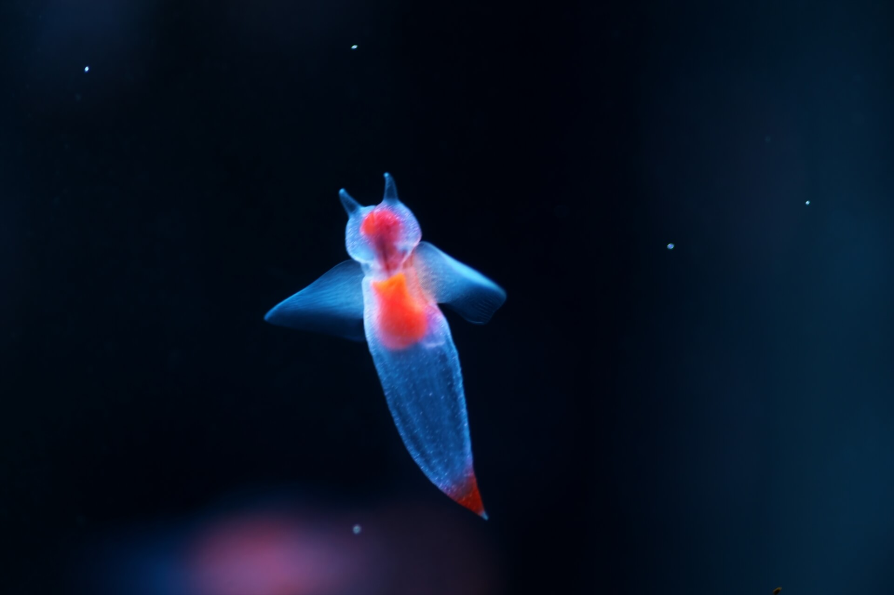

今日のいきもの

クリオネ
透明な体で海の中をふわふわと泳ぐことから、「流氷の天使」と呼ばれているよ！❄️ 普段は小さな翼のように見える「翼足（よくそく）」を動かして泳いでいるけれど、 エサを食べるときには頭から6本の触手を出して捕まえる、意外と肉食な生き物なんだ！
特徴
- 透明な体は約2〜4cmほどで、小さくてとてもかわいいよ！
- 「翼」のように見える部分をパタパタ動かして泳ぐけれど、実は羽ではなく足が変化したものなんだよ！
- 北極海や北海道周辺など、冷たい海に生息していて、冬から春にかけて見ることができるよ！